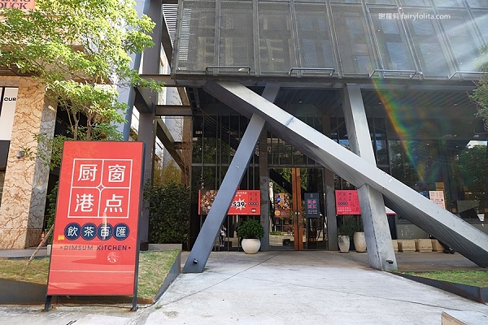
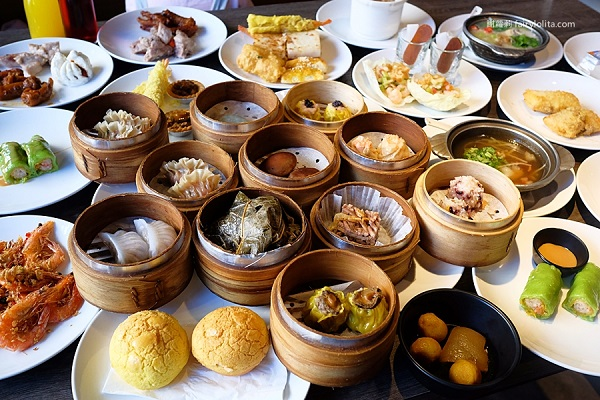
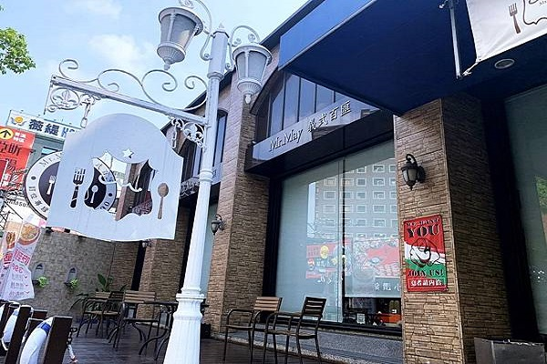
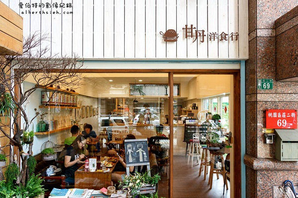

[食記] 桃園小吃
桃園3家必吃美食＆餐廳推薦！來到桃園晚餐吃什麼？
桃園有什麼必吃推薦美食？本篇編輯精選桃園十家最熱門、
最受歡迎的美食餐廳，不論是早午餐甘日洋食行、
在地特色米干、超受歡迎的日式鍋物恆八味屋，
帶你桃園美食從早吃到晚！
Top1:村民食堂 – 廚窗港點
 
村民食堂是一家港式吃到飽食物真的都hen好吃
甜點區的也很充足多樣，有茶有咖啡有冰淇淋有豆花有楊枝甘露等
除了食物多樣又好吃，每次去也會有幾樣不同的菜
價位以這樣品質的吃到飽來說CP值超高
地址 : 桃園市桃園區中正路1078號
電話 : 03-3163838
時間 : 11：30 – 14：00、17：30 – 21：00
Top2:Mr. May 義式百匯

Mr.May是位在桃園中正路上的義式料理店。
店內環境以拱門、石磚及掛燈打造異國風格，
用餐起來更加舒適愜意。
餐點部分，點一份主餐即可盡情享用現烤Pizza、
十道創意義式料理、水果甜點冰淇淋吃到飽。
是推薦給想要盡情享用西式餐點的你的桃園推薦吃到飽餐廳！
地址：桃園市桃園區中正路735號
電話：03-355-8890
時間：11：00~15：00/17：00~22：00
Top3:甘日洋食行
